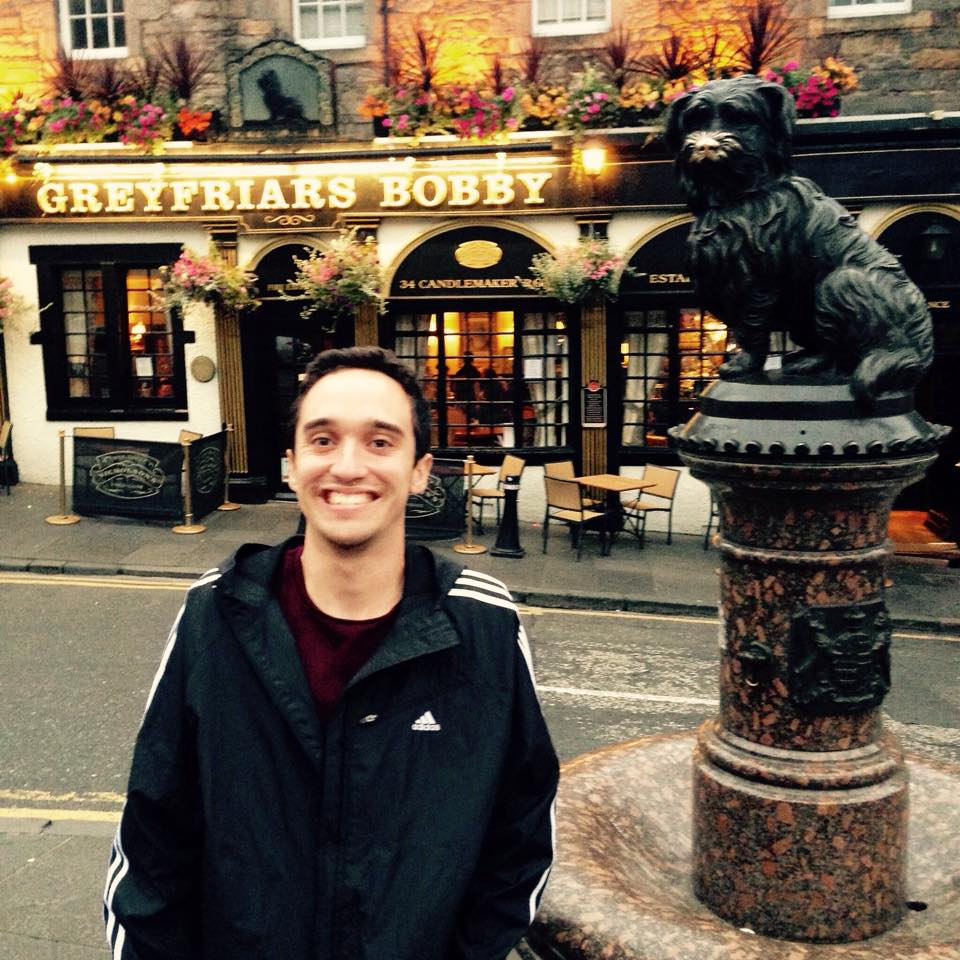

About
I am a Senior Data Scientist at Reddit, where I model and measure user behavior using causal inference, LLMs, and large-scale experimentation. I hold a PhD in Experimental Psychology from UC San Diego (Language Production Lab, advised by Victor S. Ferreira and Tamar H. Gollan), focused on language learning and bilingualism in educational settings.
After my PhD I completed the Insight Data Science fellowship, then worked as a Data Scientist at Cambly (behavioral learning data and learning experiments for conversational English) and at Cruise (human–computer interaction for autonomous vehicles), before joining Reddit.
